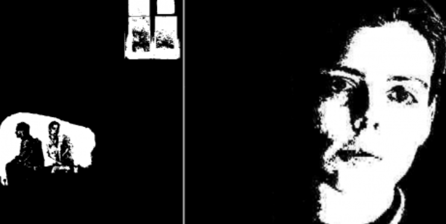
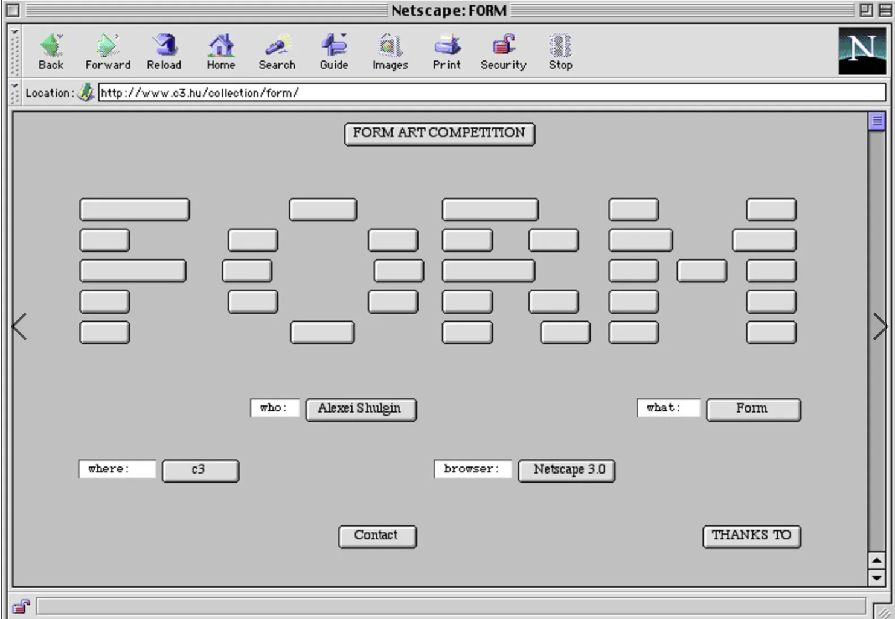
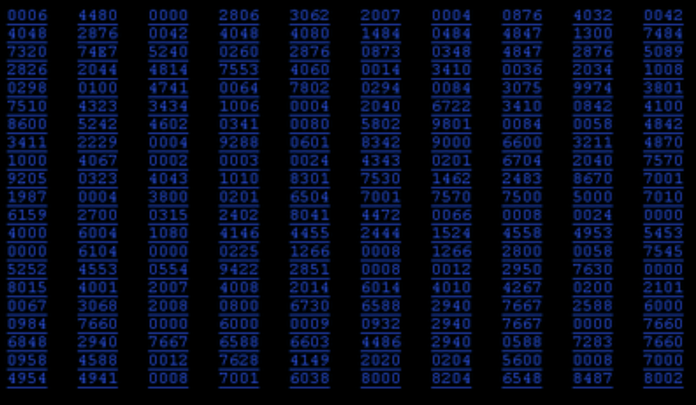

About the exhibition
In the 1990s, the basic parts of a web page were very easy to notice because the web was brand new. This exhibition brings together three early net art works in which artists used those parts as their material. Olia Lialina’s My Boyfriend Came Back from the War (1996) tells a love story through browser frames. Alexei Shulgin’s Form Art (1997) builds images from ordinary elements found on the web, such as checkboxes, buttons, and text boxes. JODI’s Automatic Rain (1995) consists of flashing blue code instead of a designed page.
All three works were made within three years of each other (1995–1997), and all of them belong to the early net.art scene, a group of artists in Russia and Europe who shared their work online. Each artist took something that is usually found in the background of a regular website and made it the main event. Because these works are built from the browser itself, they could not exist without the web. They also come from before companies and designers decided what websites should look like, so the artists were free to experiment with the web’s basic tools.
My Boyfriend Came Back from the War

A browser-based story told through hyperlinked images and text in nested frames. A couple meets again after a war, and their conversation hints at love and betrayal. Each click splits the screen into smaller frames.
Form Art

A web artwork made from standard HTML form elements like checkboxes and text boxes. They are arranged into black-and-white patterns, forming a sort of abstract picture.
Automatic Rain

This artwork fills the screen with lines of flashing blue numbers and code instead of a designed page. There is no menu or explanation, just flashing code that makes it seem like the computer is showing its inner workings.